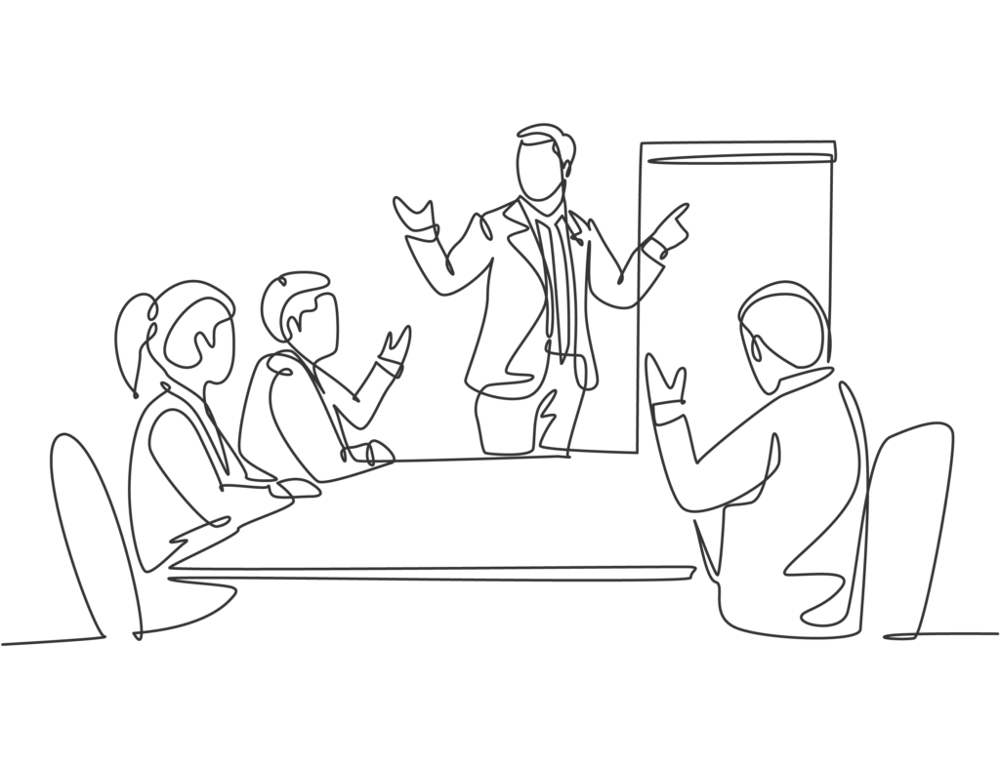
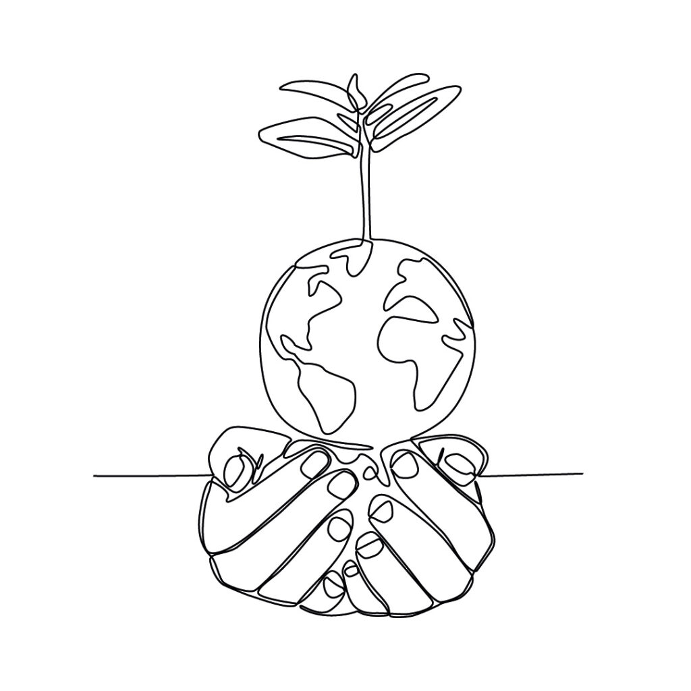

Economic well-being is a critical pillar for happiness, stability and peace of mind — for the self, the family and the community. Through Zahra Hasanaat’s robust and compassionate financial programs, hundreds of individuals have been assisted to meet their financial needs since the formation of the Financial Advisory committee over six years ago. Following the guidance of Syedna Qutubuddin RA, each recipient’s case is treated with dignity and compassion.
What we do
1000+ Applications Processed, >90% successful repayments | Small Business Loans & Personal Financing
To give impetus to the entrepreneurial spirit of community members, micro-loans are available to small business owners to jumpstart livelihood earnings. When a medium or large loan application is received, the committee helps to liaise with larger financial institutions and coordinate loans.

Career Counseling & Placement Support
Career counseling and job placement services for individuals who may have suffered a loss or hardship, or wish to start a business.
50+ cities | Emergency Relief Grants
Grants are provided for cases without the condition of repayment to individuals who are in great need and are determined to be under immediate extreme financial duress (sudden illness, loss of spouse etc). For example, during the COVID-19 pandemic, thousands were assisted with expenses for one month of grains and food around the world including in Yemen, India, Kenya and Sri Lanka.

Financial Planning and Good Practices
Zahra Hasanaat develops and organizes workshops and educational sessions to help people gain stability and security through good financial planning - including but not limited to government subsidized programs and policies, available especially in the Indian market and mentorship for small business and entrepreneurs. We intend to create a resource center for small business owners when they have questions, need support or are seeking advice for jobs, education, careers, businesses, trade and other livelihood related matters. Read more...
Objectives
Business Advice & Job Placement
- Support, advice and consultancy services for community businesses;
- Job placement services for community members;
Micro-loans, micro-grants & Financing
- The grants and interest free loans are designed to help people increase their income either through small business development or getting and retaining stable employment.
Financial Education
- Educate about Fatemi-Tayyebi financial principles and promote their use in daily transactions.
- Islamic finance educational programs are organized to give advice on Sharia compliant financial solution
Apply ↗
Committee of experts reviews application based on merit and need criterion. The applicant’s prior efforts to address financial hardships along with a feasible business plan is reviewed.
Contribute ↗
The organization is committed to good governance, transparency, fair management, responsible use of funds, and accountability.
Get involved ↗
Upliftment, not charity, is beneficial for both the givers and receivers as it instills a sense of connectedness in the community and gratitude for what we have.